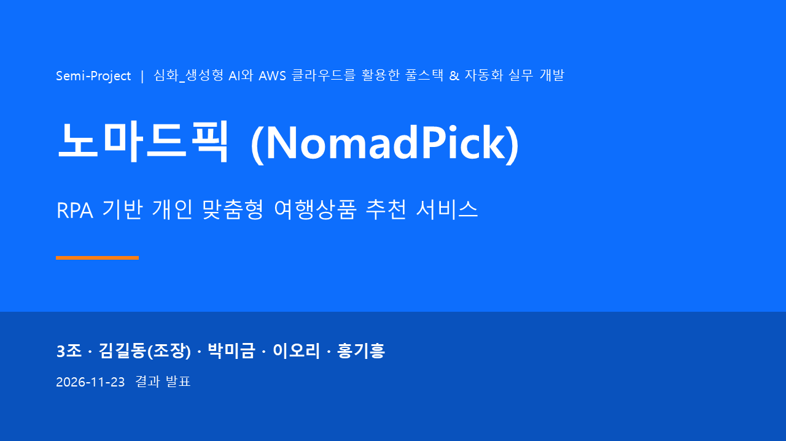
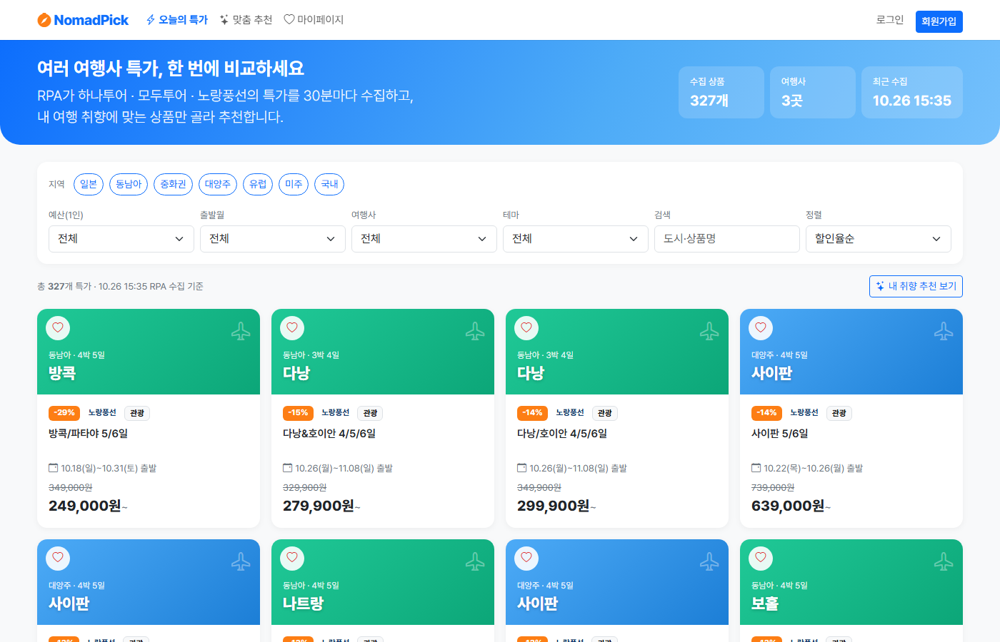
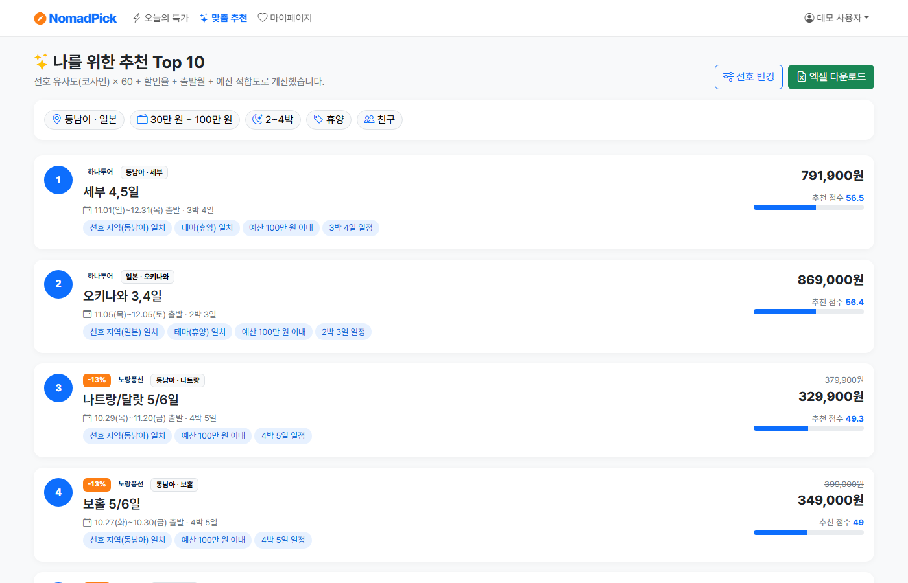
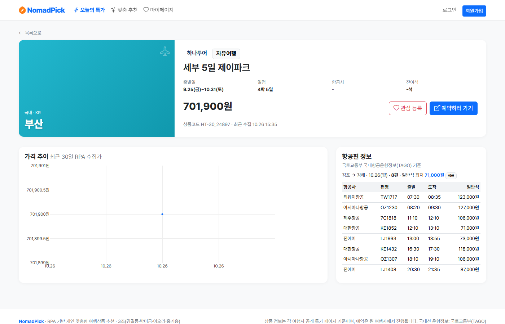
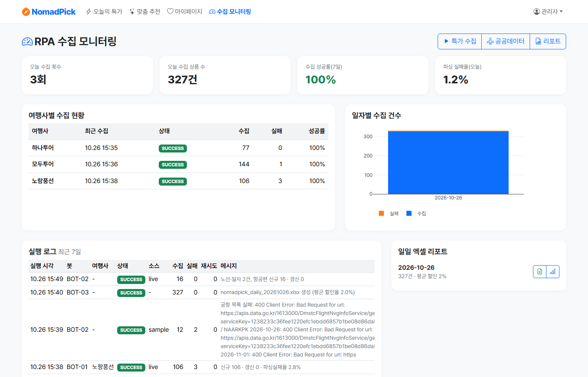

NomadPick은 하나투어·모두투어·노랑풍선의 특가를 사람처럼 접속하는 RPA가 30분마다 수집·정제하고, 사용자 취향(지역·예산·출발월·기간·테마)에 맞는 상품을 추천 이유와 함께 보여주는 서비스입니다.

설문 30명 결과, 여행 특가를 찾는 과정 자체가 가장 큰 불편이었습니다.
여러 여행사 사이트를 돌며 특가를 비교하는 데 30분 넘게 걸린다고 답했습니다.
좋은 특가를 마감된 뒤에야 알았던 경험이 있었습니다.
수집·정리·비교를 자동화해 30분 걸리던 탐색을 5분 이내로 줄였습니다.
일반 회원과 관리자 기능을 완전히 나누어 설계했습니다.




"사람처럼 접속하는 RPA"로 JavaScript 렌더링과 봇 차단(Access Denied)을 해결했습니다.
실제 Chrome UA·한국어 로케일·자동화 흔적 제거·단계별 스크롤로 접속하고, 요청 간격 2초·3회 재시도로 예의 있게 수집합니다.
"129만원", "1,290,000원~", "11/10,17,9", "3,4일" 같은 표기를 정규식·pandas로 표준화하고 76건의 단위 테스트로 검증했습니다.
프런트엔드 변경은 Netlify·Render, 백엔드 변경은 Render·EC2에만 배포되도록 경로 필터를 구성했습니다.
처음 세운 다섯 가지 목표를 모두 달성했습니다.
수집 성공률 (목표 95%)
회당 수집 상품 (3개 여행사)
목록 API 평균 응답 (목표 1초)
단위·통합 테스트 전체 통과
4명이 화면·데이터·자동 수집·서버를 나누어 3주 동안 완성했습니다.
PM · 백엔드 · 배포
FastAPI 20개 API, 인증, Docker·Render·EC2, CI/CD
DB · 데이터 · 추천
TiDB 10개 테이블, pandas 정제, 유사도 추천, 리포트
프런트엔드 · UI/UX
화면 8개, Bootstrap 5 반응형, Plotly, Netlify
RPA · 데이터 수집
Playwright 수집기 3종, 국토교통부 API, 스케줄러